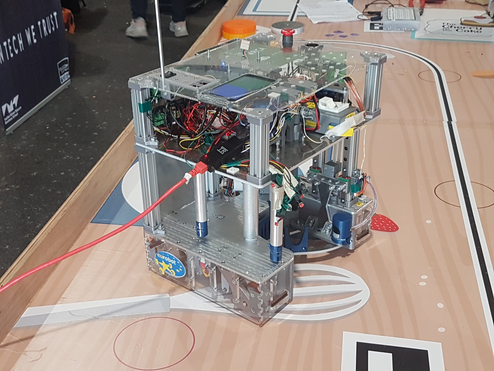
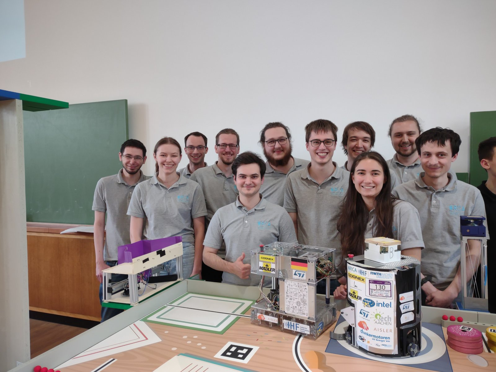
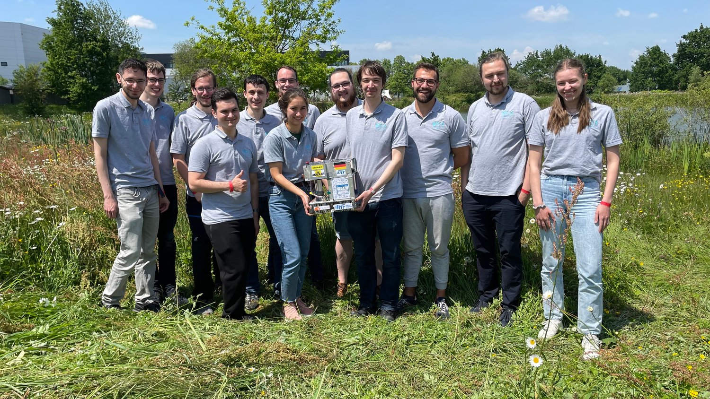
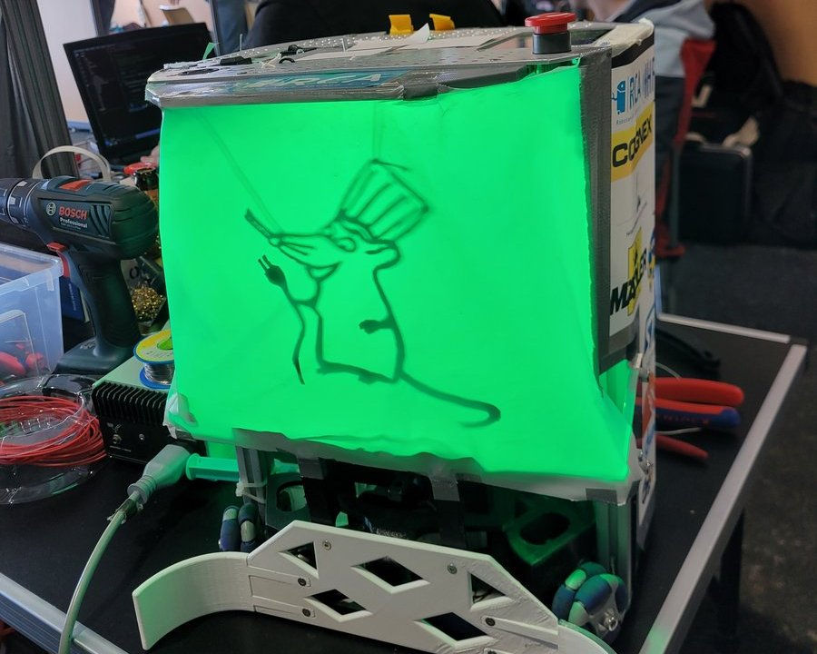

Auch im Jahr 2023 wollen wir die nun beendete Saison resümieren. Der Roboterclub kann auf einen deutlichen personellen Zuwachs und damit neuen Teamspirit zurückblicken. Wie üblich haben wir dieses Jahr einen neuen Roboter konstruiert und von Grund auf neu gebaut.
Dürfen wir vorstellen: Antoinette

Mechanik
Im Vergleich zum Vorjahr hat sich einiges geändert. Antoinette ist dieses Jahr mit einem Differentialantrieb ausgestattet. Zwei große getriebene Räder mit zwei Omniwheels als Stützräder bilden die Basis des Antriebsstrangs.
Um mit den diesjährige Spielelementen interagieren zu können ist, Antoinette auf der Vorderseite mit einem Greifer ausgestattet, der die Kuchenscheiben greifen und anschließend mit einem Aufzugsmechanismus anheben kann. Die Kuchenscheiben sollen so auf die Stangen des Sortiermechanismus geschoben werden. Diese sind dazu gedacht im Ablegeprozess die richtige Reihenfolge der Kuchen für das Legendary Recipe, ganz unten der dunklen Kuchenboden, gefolgt von der gelben Buttercremescheibe und obendrauf die rosa Toppingscheibe, zu realisieren. Zusätzlich ist im Roboter ein Kirschenportionier-Mechanismus verbaut, der es mit nur einem Motor erlaubt eine einzelne Kirsche zum Schluss des Absetzens auf dem fertigen Kuchen zu platzieren.
Der spaßigste Mechanismus am diesjährigen Roboter ist wahrscheinlich die Cherry-Kanone. Um uns einige Extrapunkte sichern zu können haben wir kurzfristig vorm Wettbewerb noch einen durch eine Feder getrieben Schussmechanismus überlegt, der eine Kirsche zu Spielbeginn in den am Spielfeldrand stehenden Korb befördert. Den finalen Touch hat Antoinette durch die zweifarbige LED-Beleuchtung, in grün-blau, erhalten.
Elektronik
Antoinette ist auch dieses Jahr fast ausschließlich mit selbstdesignten Platinen versehen. Ausnahme bildet hier das UP2-Board von Intel, welches diese Saison erstmalig verbaut wurde. Abgesehen davon wurden die Mikro-Motoren der zweiten Generation für alle Motoren verbaut, sowie das neue BMS, welches diese Saison nur teilweise in Benutzung war. Dies ermöglichte uns den Roboter wie auch zuvor über einen 6S-LiFe-Akku oder alternativ über das Netzteil mit dem nötigen Strom zu versorgen. Die größte Neuerung stellt die Kamera dar, die am Spielfeldrand in etwa einem Meter Höhe angebracht ist. Diese soll die ArUco-Marker, die auf den Gegnerrobotern sowie den Spielelementen abgedruckt sind, erkennen und auf dem Spielfeld tracken.
Software
Diese Saison wurde nun der Schritt gewagt auf ROS2 (Robot Operating System) umzusteigen. Zum Testen und Entwickeln läuft ROS2 Humble Hawksbill in einem Dockercontainer auf dem UP2-Board. Der ROS2 Softwarestack stellt die zentrale Steuereinheit des Roboters dar und ist unter anderem für die Routenplanung, Sensorauswertung und Ausführung der Spielstrategie zuständig. Die Motorsteuerung in C++ basiert auf dem Embedded-Framework modm aus den vorherigen Jahren, die für die aktuellen Mikromotoren weiterentwickelt wurde. Um die Kommunikation zwischen der ROS2 basierten Spielsteuerung, dem Antrieb, und den Aktoren zu ermöglichen, wurde eine canOpen Schnittstelle implementiert. Das altbewährte Lokalisierungssystem per Ultraschallsensoren und IMU, welches noch das Xpcc Protokoll über CAN aus dem modm Framework nutzt, wurde ebenfalls an ROS2 angebunden. Bei Spielstrategie und Routenplanung wurde vor allem Wert auf Wiederverwendbarkeit gelegt, um eine Anpassung an die Regeln der kommenden Saison zu ermöglichen, sowie um neue Features, wie visuelle Spielelemente-Erkennung, einfach einbinden zu können.
Wettbewerbe
Der Roboterclub hat dieses Jahr an den Wettbewerben in Deutschland und dem Finale in Frankreich mit jeweils zwölf Mitgliedern teilgenommen.
Vorentscheid Deutschland

Am 21. und 22. April hat der Roboterclub am deutschen Vorentscheid in Dresden teilgenommen, welcher von der TURAG vorort organisiert wurde. Am Freitag vor dem Wettbewerb wurde bereits angereist, um weiter am Roboter arbeiten zu können. Leider war der Roboter Antoinette noch nicht soweit, als das wir mit ihr in Dresden antreten konnten. Daher musste der Roboter Wanda der letzten Saison noch einmal genutzt werden. Hinzu kam ein Problem mit fehlerhaften Bauteilen in unserem Lokalisierungssystem, was zu einem arbeitsreichen Samstag führte. Allerdings konnten am Samstagabend sowohl Antoinette ihre ersten Fahrmanöver ausüben als auch Wanda Spiele bestreiten. Dadurch konnten wir uns in der Finalrunde am Sonntag mit dem dritten PLatz für das Finale in Frankreich qualifizieren.
Internationales Finale Frankreich

Vom 17. bis 20. Mai fand das Eurobotfinale in La Roche-sur-Yon statt. Über vier Tagen haben wir mit Hochdruck an dem Roboter Antoinette gearbeitet und konnten letztendlich auch das letzte Spiel mit ihr bestreiten. Dafür wurde teilweise komplett auf Schlaf verzichtet, was mit Platz 11 von 25 nach den Vorrunden belohnt wurde. Bei den Spielen davor wurde noch einmal auf den Roboter Wanda zurückgegriffen. Dabei stellte sich heraus, dass unser Lokalisierungssystem sehr anfällig gegenüber LIDAR-Sensoren anderer Roboter ist, was die Positionsgenauigkeit massiv beeinflusste. Weiterhin wurden die beiden Roboter noch um einen sogenannten Disguise-Mechanismus aufgerüstet, welcher den Roboter kurz vor Spielende ausleuchtet. Zur Beleuchtung wurde eine unserer Runetag-Platinen zweckentfremdet.

Alles in allem war die Saison ein großer Erfolg. Wir konnten mit einem weitgehend neuen Team, einen komplett neuen Roboter in kurzer Zeit bauen, der an einem Wettbewerb partizipieren konnte. Dabei haben wir endlich den Umstieg auf ROS2 absolvieren können. Hinzu hat das Team sehr viel gelernt und bereits viele neue Ideen für Verbesserungen entwickelt. Und natürlich am wichtigsten, alle hatten sehr viel Spaß dabei!